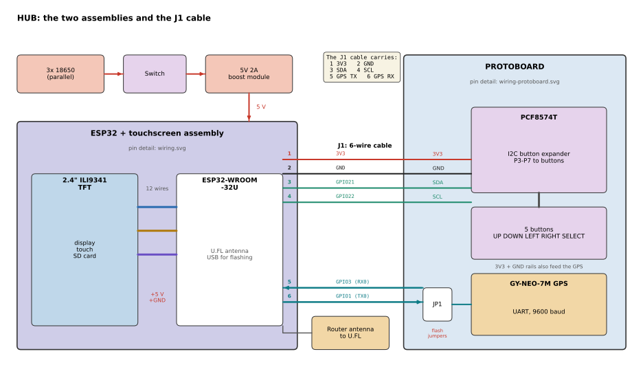

War-rig-phantom: ESP32-DIV build Parts ordered
A portable, passive counter-surveillance kit. The HUB is an ESP32-DIV v1-style handheld: an ESP32 with a router antenna, a 2.4" touch screen, buttons and GPS. It scans WiFi and BLE, spots deauth floods and logs GPS-tagged sightings to SD. A C3 WiFi sniffer with a 3.5" readout and a removable watch run beside it. One 18650 pack powers them all.
- Hub ESP32-WROOM-32U, ESP32-DIV v1 firmware
- Display 2.4" 240×320 touch, SD slot
- Power 3x 18650 in parallel, about 6 hours (estimate)
- Parts R898.15 at nde3d
- Receive only: no deauth, injection or jamming
Boards
Every board has one fixed name. It is used in the docs and firmware, and should be on a label stuck to the board. Each module works on its own. The only cable between modules runs from the WIFI-NODE to its READOUT.
| Name | Board | Job | State |
|---|---|---|---|
| HUB | ESP32-WROOM-32U dev board + 2.4" ILI9341 touch/SD + PCF8574 buttons + NEO-7M GPS | Handheld scanner: WiFi and BLE scans, deauth detector, packet monitor, GPS wardriving to SD | Parts ordered |
| WIFI-NODE | ESP32-C3 (first) | WiFi promiscuous capture, sorted by how long each device has been around. Streams rows to the READOUT | Working |
| READOUT | Arduino UNO R3 + 3.5" TFT shield | Big screen for the WIFI-NODE | Working |
| STATUS | ESP32-C3 (second) + 128×64 OLED | Removable watch: logs GPS and WiFi scans and sends a CSV to a phone. Docks to the kit now and then | Working |
| BLE-SCAN | ESP32-1732S019 (ESP32 + 1.9" screen) | On hand, not in this build: the HUB covers BLE | Spare |
Retired on 2026-11-02: the Raspberry Pi 5 hub, the 7" display and its driver board, the RTL-SDR and the ESP32-S3. The Pi was overkill for this kit.
HUB firmware
The HUB runs cifertech's ESP32-DIV v1.7.0, built for the v1 board (classic ESP32). Only its passive tools are used.
Used
- Wi-Fi Scanner: nearby networks with details
- Packet Monitor: waterfall over channels 1-14, optional PCAP to SD
- Deauth Detector: flags deauth floods nearby
- BLE Scanner and BLE Sniffer: MAC, RSSI, packet count, last seen
- Wardriver: WiFi and BLE with GPS position, to SD as WiGLE CSV
- Satellite Scanner: GPS fix check
- Touch Calibrate, SD File Manager, Settings
Not used
Deauth attack, beacon spam, probe flood, captive portal, BLE spoofing, Sour Apple, BLE jammer and BLE Rubber Ducky. They transmit, and this project is receive-only. The NRF24, CC1101, IR and NFC tools need hardware this build doesn't have.
Flashing
Use the prebuilt ESP32-DIV-v1-v1.7.0-merged.bin at offset 0x0 with esptool, or the web flasher at cifertech.github.io/ESP32-DIV (choose v1). Unplug the GPS first.
Shopping list
Tick parts off as you collect them; ticks are saved in this browser. The nde3d order was placed on 2026-11-02 (collect at Strand, pay on collection). Prices are from that order and exclude shipping.
| Part | Qty | Price | Role |
|---|
Power
Three 18650 cells in parallel feed one single-cell 5V 2A charge/boost module, and its 5 V output powers every module. Estimated load for the whole kit is about 600 to 850 mA typical and 1.4 A peak at 5 V. The pack holds about 24 Wh, so expect about 6 hours. Measure it; the cells are probably below their label.
3x 18650 in parallel -> master switch -> 5V 2A charge/boost module -> 5 V rail
^ |-> HUB: ESP32 VIN, TFT VCC, GPS VCC
USB-C breakout (charge pads) ----+ |-> READOUT: UNO 5V and WIFI-NODE 5V
+-> STATUS dock
Charging
The module has no USB port. Solder a USB-C breakout, or a cut USB cable, to its charge input pads. Charge with the master switch off until you know it handles charge-while-running.
3.3 V parts
The PCF8574 runs from the ESP32's 3V3 pin, not the 5 V rail. The TFT and GPS take 5 V on VCC and have their own regulators; their signal lines are 3.3 V.
Battery level
There is no battery gauge on the HUB (BATTERY_ADC_PIN is -1). Check the cells with a meter until a gauge is added.
Wiring ESP32-DIV v1
The HUB is built as two parts joined by one 6-wire cable (J1): the ESP32 + touchscreen assembly, and a protoboard (an UNO proto shield used on its own) carrying the GPS, the PCF8574 button expander and the five buttons. Pins come from the firmware's shared.h and User_Setup v1.h. Nothing here has been wired or tested yet. The WIFI-NODE to READOUT wiring is on its own page.
1. Overview: the two parts and the J1 cable

2. ESP32 + touchscreen

3. Protoboard
![Protoboard layout. J1 pin 1 feeds the 3V3 rail (printed 5V on the shield) and pin 2 the GND rail. Pins 3 and 4 go to the PCF8574 SDA and SCL. The PCF8574 VCC and GND go to the rails; P3 DOWN, P4 LEFT, P5 RIGHT, P6 UP and P7 SELECT each go to a push button whose other leg goes to GND. P0 to P2 are unused. J1 pins 5 and 6 go through the two JP1 jumpers to the GPS TXD and RXD. The GPS VCC goes to the 3V3 rail and GND to ground; PPS is not connected. An inset shows the buttons as a D-pad with SELECT in the centre.](wiring-protoboard.svg)
HUB (ESP32-WROOM-32U)
| GPIO | Goes to |
|---|---|
| 15 | TFT CS |
| 0 | TFT RESET |
| 2 | TFT DC |
| 13 | TFT SDI (MOSI) |
| 14 | TFT SCK |
| 12 | TFT SDO (MISO) |
| 32 | TFT LED (backlight, PWM) |
| 33 | Touch T_CS |
| 5 | SD_CS |
| 18 | T_CLK and SD_SCK |
| 23 | T_DIN and SD_MOSI |
| 19 | T_DO and SD_MISO |
| 21 / 22 | J1 pins 3 / 4: PCF8574 SDA / SCL |
| 3 (RX) | J1 pin 5: GPS TX |
| 1 (TX) | J1 pin 6: GPS RX (optional) |
| 3V3 / GND | J1 pins 1 / 2: protoboard rails |
| VIN | 5 V rail from the boost module |
Rules
- Pull both JP1 jumper caps on the protoboard to flash. GPIO 1 and 3 are also the USB serial pins.
- J1 pin 1 is 3V3, never the 5 V rail. The shield's rail is printed "5V": relabel it 3V3. The PCF8574 address is auto-detected (0x20-0x27).
- The GPS runs from the 3V3 rail. If it never gets a fix, feed its VCC from 5 V with a 7th wire.
- Buttons: P6 UP, P3 DOWN, P4 LEFT, P5 RIGHT, P7 SELECT. Wire the other leg of each to GND.
- SDA 21 / SCL 22 are the ESP32 defaults. The firmware calls Wire.begin() with no pins, so check this first if the buttons do nothing.
- Common ground between every part.
- No battery gauge: BATTERY_ADC_PIN is -1.
Bring-up order
- Flash the bare board: ESP32-DIV-v1-v1.7.0-merged.bin at 0x0
- TFT, then touch (run Touch Calibrate), then SD
- PCF8574 and buttons
- GPS, then the antenna
- Battery, switch and boost module last, all on USB until then
Build order
- Collect the nde3d order. Check that the ESP32 is a full dev board with USB and headers, and find its COM port.
- Flash the bare board with nothing attached: esptool --chip esp32 -p COMx erase-flash, then write-flash 0x0 ESP32-DIV-v1-v1.7.0-merged.bin at 921600 baud (115200 if that fails).
- Wire the TFT and check the menu shows.
- Wire touch, run Touch Calibrate, then add the SD card.
- Wire the PCF8574 on 3V3 and the five buttons; check the menu moves.
- Build the protoboard (GPS, PCF8574, buttons, JP1, J1) and connect it with the 6-wire cable. Check the menu moves and satellites show in Satellite Scanner. Pull the JP1 caps whenever you flash.
- Fit the router antenna on the U.FL socket. Test the WiFi scan, BLE scan and a short Wardriver log.
- Bench-test the power system: matched cells, module output, then the HUB and READOUT on battery.
- Measure every part and lay out the case.
- Walk test, log check and a runtime measurement.
Case To redo
The 22 × 22 cm clamshell layout and its printed filler blocks were designed for the Pi 5 and 7" display, so they don't fit these parts. The layout will be redrawn once the parts are in hand and measured. The measured case numbers (25 mm per half, 165 mm hinge to handle) and the Pi 5 filler files are kept in the repository for reference.
Later
None of this is needed for the build above.
Laptop analysis
Collect the HUB's SD logs (WiGLE CSV, PCAP) and the STATUS watch CSVs on a laptop. Merge them, look for devices seen in several places, and learn from what turns up.
2.4 GHz spectrum
The firmware's 2.4 GHz scanner needs an NRF24 module. nde3d doesn't stock one, so it's deferred. Only the receive-side scanner would be used.
Battery gauge
A voltage divider on a spare ADC pin, with BATTERY_ADC_PIN set in a source build, would show the battery level on screen.
Cellular
Spotting fake cell towers (IMSI catchers) needs dedicated hardware. It is out of scope.